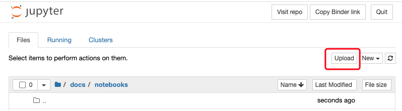
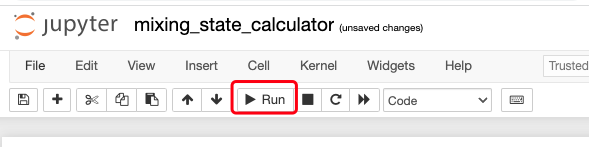

mixing state calculator
This script is used for calculating mixing state index
Step 0: click the link here to launch a jupyter notebook
Step 1: upload your own csv file (each
row is a particle, each column is the mass of a species)
Step 2: edit the
file_name and group_list belowBelow is an exmaple with three
surrogate speciesThe definition of surrogate species is here (Figure 2)
- surrogate species 1: “BC” and “POM”
- surrogate species 2: “DUST”
- surrogate species 3: “SS”
Step 3: click
Run button on the top of your jupyter notebook
Please edit the “file_name” and “group_list”, then run the code below
[1]:
file_name = "sample_data.csv"
group_list = [["BC","POM"],
["DUST"],
["SS"]]
# ====== please don't change ======
import numpy as np
import pandas as pd
import pmcpy
# load data
df = pd.read_csv(file_name)
# get matrix for calculation
da = np.concatenate([df[group].values.sum(axis=1).reshape(-1,1) for group in group_list],axis=1)
# calculate mixing state index
D_alpha, D_gamma, chi = pmcpy.get_chi(da)
print("mixing state index:", chi)
print("average particle (alpha) species diversity:", D_alpha)
print("bulk population (gamma) species diversity:", D_gamma)
mixing state index: 0.9408323695414793
average particle (alpha) species diversity: 2.838147712915256
bulk population (gamma) species diversity: 2.9537462489849164